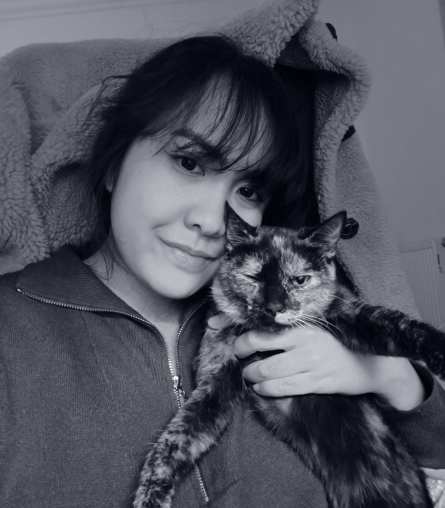

Welcome, curious traveler ! ❀
I'm Priscilla Natalia, student in communication passionate about creating engaging digital experiences. In this picture you can also see Matcha, my 4 legged personal assistant who help me a lot with (mostly) moral support!
I'll take you through my journey of building this Octalysis Framework website, sharing insights into the design choices, development process, and the challenges faced along the way. Let's dive in!